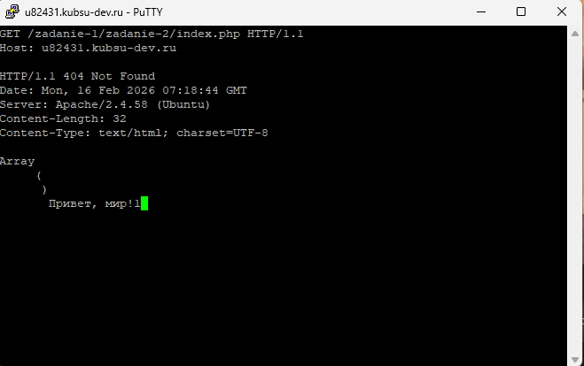
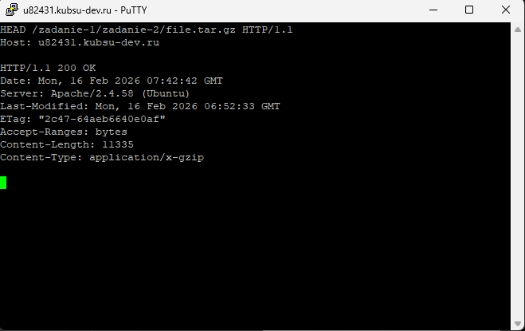
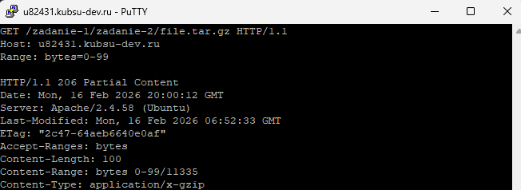
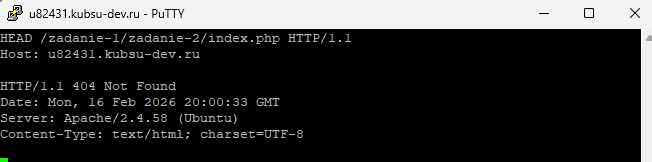

📡 Лабораторная работа №2
Ручная отправка HTTP-запросов через PuTTY
⚡ В этой работе мы подключились к серверу u82431.kubsu-dev.ru:80 через PuTTY и вручную формировали HTTP-запросы. Все скриншоты показывают как сам запрос, так и ответ сервера.
Файлы для запросов: index.php, image.png, file.tar.gz — лежат в папке /zadanie-2/.
⚙️ Ввод для подключения PUTTY
шаг 0 подключение

01 GET /index.php (HTTP/1.0)
Запрос методом GET в протоколе HTTP/1.0. Мы вручную отправили GET-запрос к серверу, чтобы получить главную страницу
index.php. В HTTP/1.0 заголовок Host не является обязательным, так как эта версия протокола предполагает, что на одном IP-адресе работает только один сайт. В ответ сервер вернул заголовки и тело страницы. Несмотря на то, что в первой строке ответа указано 404 Not Found, файл index.php выполнился и вывел текст "Привет, мир!", что связано с особенностями настройки данного сервера.
GET
HTTP/1.0
index.php

⚙️ Загруженный на сервер файл
шаг 0 подключение

02 GET /index.php (HTTP/1.1)
Запрос методом GET в протоколе HTTP/1.1. В этой версии протокола заголовок
Host является обязательным, так как HTTP/1.1 поддерживает виртуальные хосты — несколько сайтов на одном IP-адресе. Сервер использует заголовок Host, чтобы понять, какой именно сайт нужно показать. Мы отправили запрос к тому же файлу index.php, указав хост u82431.kubsu-dev.ru, и получили ответ с выполненным PHP-кодом.
GET
HTTP/1.1
index.php

03 HEAD file.tar.gz (определение размера)
Метод HEAD используется для получения только заголовков ответа, без тела файла. Это позволяет узнать информацию о ресурсе, не скачивая его целиком. Мы отправили HEAD-запрос к файлу
file.tar.gz, чтобы определить его размер. В ответе ищем заголовок Content-Length — именно он содержит размер файла в байтах. Таким образом можно, например, проверить размер файла перед скачиванием.
HEAD
HTTP/1.1
file.tar.gz

04 HEAD image.png (медиатип)
Метод HEAD для определения медиатипа (MIME-типа) файла. Мы отправили HEAD-запрос к изображению
image.png. В ответе сервера заголовок Content-Type указывает тип данных: image/png. Это позволяет браузеру или клиенту понять, как обрабатывать полученный файл — как картинку, как текст, как видео и т.д.
HEAD
HTTP/1.1
image.png

05 POST /index.php (отправка комментария)
Метод POST используется для отправки данных на сервер, например, при заполнении форм. Мы отправили POST-запрос к файлу
index.php с данными формы comment=Hi!. Для этого указали заголовок Content-Type: application/x-www-form-urlencoded (стандартный для HTML-форм) и заголовок Content-Length с точной длиной тела запроса. Сервер успешно принял данные, что видно по массиву [comment] => Hi! в ответе, и выполнил PHP-код.
POST
HTTP/1.1
index.php

06 GET file.tar.gz (первые 100 байт)
Заголовок
Range позволяет запросить не весь файл, а только его часть. Это полезно для докачки файлов или потокового воспроизведения. Мы отправили GET-запрос к файлу file.tar.gz с заголовком Range: bytes=0-99, что означает "отдать первые 100 байт". В ответе сервер вернул статус 206 Partial Content, заголовок Content-Range с указанием диапазона и общим размером файла, а в теле — первые 100 байт архива (бинарные данные, которые выглядят как "каша").
GET
HTTP/1.1
file.tar.gz (range)

07 HEAD index.php (определение кодировки)
Определение кодировки ресурса с помощью метода HEAD. Мы отправили HEAD-запрос к
index.php и проанализировали заголовок Content-Type. В нём содержится информация не только о типе данных (text/html), но и о кодировке символов — параметр charset. В нашем случае сервер вернул charset=UTF-8, что означает, что страница использует кодировку Unicode, поддерживающую все символы, включая русские буквы.
HEAD
HTTP/1.1
index.php
